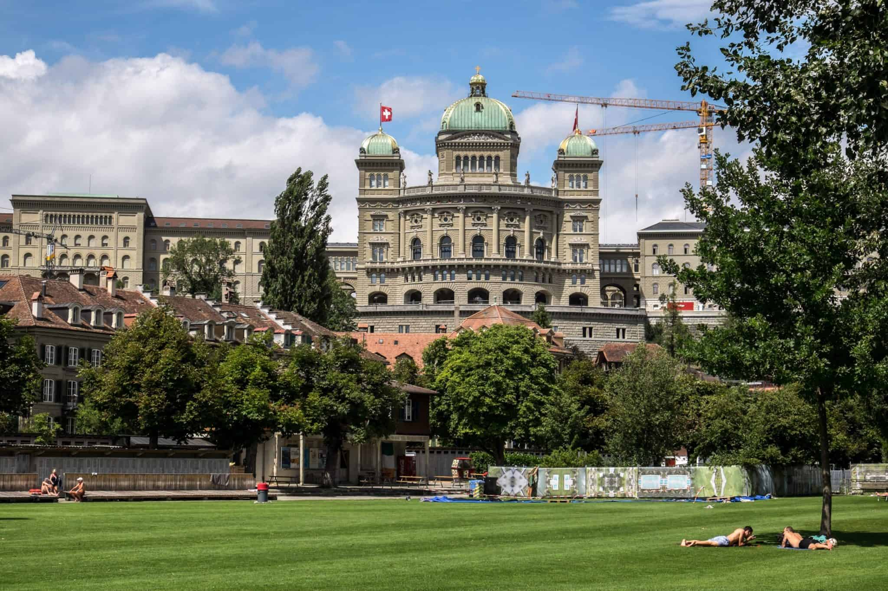

Capital City Of Switerland
The name Jungfrau ("maiden, virgin"), which refers to the highest of the three prominent mountains overlooking the Interlaken region, along with the Mönch ("monk") and the Eiger ("ogre"), is most likely derived from the name Jungfrauenberg given to Wengernalp, the alpine meadow directly facing the huge northern side of the Jungfrau, across the Trummelbach gorge. Wengernalp was so named for the nuns of Interlaken Monastery, its historical owner. Contrary to popular belief, the name did not originate from the appearance of the snow-covered mountain, the latter looking like a veiled woman.
According to the Köppen Climate Classification, Bern has an oceanic climate (Cfb)[15] closely bordering on a humid continental climate (Dfb).
The closest weather station near Bern is located in the municipality of Zollikofen, about 5 kilometres (3 mi) north of the city centre. The warmest month for Bern is July, with a daily mean temperature of 18.3 °C (64.9 °F), and a daily maximum temperature of 24.3 °C (75.7 °F).[15] The highest temperature recorded at Bern / Zollikofen is 37.0 °C (98.6 °F),[16] recorded in August 2003. On average, a temperature of 25 °C (77 °F) or above is recorded 40.7 days per year, and 6 days per year with a temperature of 30 °C (86 °F) or above at Zollikofen,[15] and the warmest day reaches an average of 32.1 °C (89.8 °F).[17]
There are 103.7 days of air frost, and 22.3 ice days per year at Bern (Zollikofen) for the period of 1981–2010, as well as 14.1 days of snowfall, 36.7 days of snow cover per year and the average amount of snow measured per year is 52.6 centimetres (20.7 in).[15] On average, January is the coldest month, with a daily mean temperature of −0.4 °C (31.3 °F), and a daily minimum temperature of −3.6 °C (25.5 °F).[15] The lowest temperature ever recorded at Bern (Zollikofen) was −23.0 °C (−9.4 °F),[18] recorded in February 1929, and typically the coldest temperature of the year reaches an average of −12.8 °C (9.0 °F)[19] for the period of 1981–2010.
Tourism
The structure of Bern's city centre is largely medieval and has been recognised by UNESCO as a Cultural World Heritage Site. Perhaps its most famous sight is the Zytglogge (Bernese German for "Time Bell"), an elaborate medieval clock tower with moving puppets. It also has an impressive 15th century Gothic cathedral, the Münster, and a 15th-century town hall. Thanks to 6 kilometres (4 miles) of arcades, the old town boasts one of the longest covered shopping promenades in Europe.
Since the 16th century, the city has had a bear pit, the Bärengraben, at the far end of the Nydeggbrücke to house its heraldic animals. The four bears are now kept in an open-air enclosure nearby, and two other young bears, a present by the Russian president, are kept in Dählhölzli zoo.[37]
The Federal Palace (Bundeshaus), built from 1857 to 1902, which houses the national parliament, government and part of the federal administration, can also be visited.
Albert Einstein lived in a flat at the Kramgasse 49, the site of the Einsteinhaus, from 1903 to 1905, the year in which the Annus Mirabilis papers were published.
The Rose Garden (Rosengarten), from which a scenic panoramic view of the medieval town centre can be enjoyed, is a well-kept Rosarium on a hill, converted into a park from a former cemetery in 1913.
There are eleven Renaissance allegorical statues on public fountains in the Old Town. Nearly all the 16th-century fountains, except the Zähringer fountain, which was created by Hans Hiltbrand, are the work of the Fribourg master Hans Gieng. One of the more interesting fountains is the Kindlifresserbrunnen (Bernese German: Child Eater Fountain), which is claimed to represent a Jew,[38] the Greek god Chronos, or a Fastnacht figure meant to frighten disobedient children.[39]